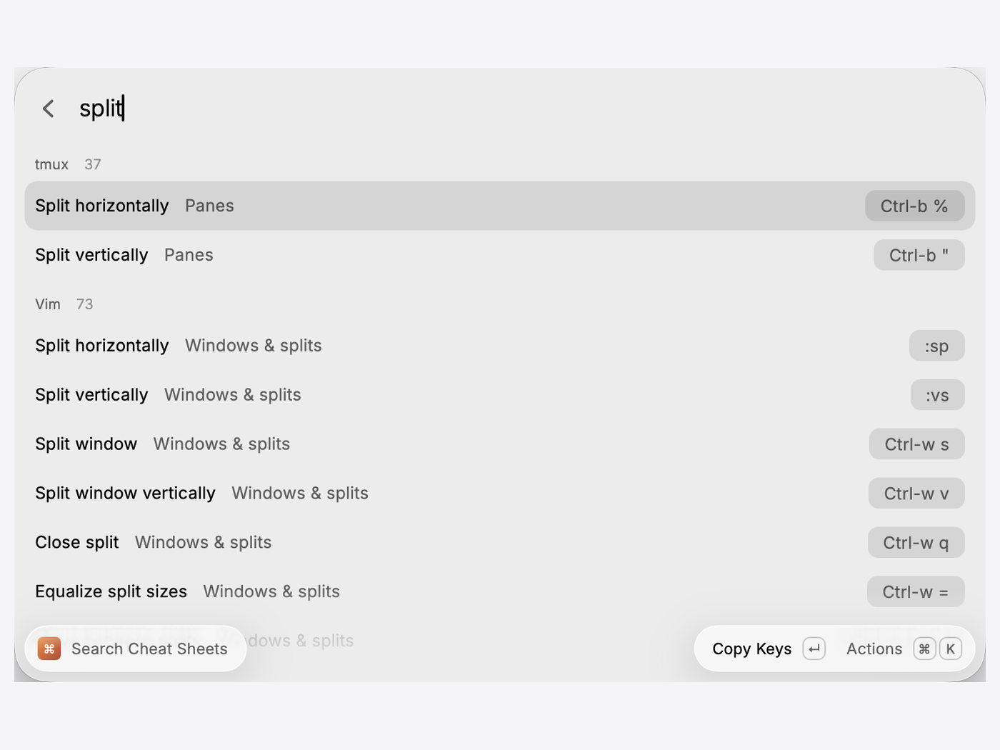

Holding ⌘ to see an app's shortcuts is free and always will be, and so is opening that panel from Raycast, Alfred, the terminal or a keysi://show URL. Keysi Pro adds the rest of reaching Keysi from somewhere else: a launcher, a terminal, an automation.
In the app, open Integrations from the Keysi menu bar icon to see which of these are ready on your Mac and which need a step. This page is the same list, for reading before you buy.
Search cheat sheets, open an app's shortcuts in Keysi, or open Practice and Progress without leaving Raycast. A Raycast extension can't read another app's menus, so it asks the Keysi app to do the work. Show Shortcuts is free; Search Cheat Sheets, Practice and Progress are Keysi Pro.
The extension is waiting on Raycast Store review (submitted 11 September 2026) and ships when Raycast merges it, not when Keysi ships. Everything else on this page works as soon as you install Keysi.

Three keywords:
ks shows the shortcuts panel, optionally with a search already typed (ks save as). Free.kspractice opens Practice Mode. Keysi Pro.ksexport exports an app's shortcuts. Keysi Pro.The workflow is three keywords wired to Open URL actions. No scripts, and nothing in it does more than typing open keysi://show yourself. Download Keysi.alfredworkflow from the latest release and double-click it; Alfred asks once before installing. Alfred's Powerpack is required for workflows.
Keysi ships a keysi command inside the app bundle, so it always matches the app you have installed. Put it on your PATH:
sudo ln -sf /Applications/Keysi.app/Contents/Resources/keysi-cli.sh /usr/local/bin/keysiThen:
keysi show # the panel for the app you were last in (free)
keysi show save as # ...with the search already filled in (free)
keysi practice # open Practice Mode (Keysi Pro)
keysi progress # open Your Keysi (Keysi Pro)
keysi integrations # this list, inside the app (free)
keysi export Figma # export an app's shortcuts, opens a save panel (Keysi Pro)The Integrations window gives you that first command with the right path filled in. Keysi won't write to a directory on your PATH itself, and doesn't run anything to check whether the link exists.
Keysi's App Intents let a Shortcuts workflow find and run menu commands, which also makes them available to Spotlight actions and Siri. They appear in Shortcuts once Keysi is running. Show Shortcuts is free; the rest are Keysi Pro.
Your custom cheat sheets are indexed, so a Vim or tmux binding turns up in an ordinary Spotlight search. Nothing to set up. Keysi Pro.
Select a command name in any app, choose Services ▸ Search Shortcuts in Keysi, and Keysi looks up its shortcut in the app you were in. macOS lists it once Keysi has run, and you can give it a shortcut of its own in System Settings ▸ Keyboard ▸ Keyboard Shortcuts ▸ Services. Keysi Pro.
Keysi writes the frontmost app's whole cheat sheet to a file: Markdown for a wiki or a repo, a printable PDF for the wall, or a desktop picture sized to your screen, so the shortcuts sit behind your windows. Markdown and PDF from the menu bar item are free; the desktop picture is Keysi Pro.
Use the menu bar item, or with Keysi Pro: Export Shortcuts in Shortcuts, keysi export Figma in the terminal, or a keysi://export URL. Either way, macOS's save panel opens and you pick the location and format, so nothing can make Keysi write a file on its own.
Every app shortcuts page and cheat sheet here has an Open in Keysi button. On an app's page it opens that app's panel through keysi://show?bundle=com.apple.dt.Xcode, if the app is running; Keysi never launches an app because a link asked. On a cheat sheet it shows that built-in sheet in Settings ▸ Shortcuts through keysi://sheet?id=vim. Both are free, and neither downloads or installs anything.
Everything above except showing an app's shortcuts, and Markdown or PDF export from the menu bar, is Keysi Pro: $14.99 once, with a 14-day trial. Nothing free became paid to make room for it. The overlay, the hotkey, click-to-run, custom sheets, search and the conflict warnings are as free as they've always been, and stay that way.
Showing shortcuts is free; the rest is Keysi Pro, $14.99 once. Each install starts with 14 days of it, and the cheat sheet itself stays free either way.